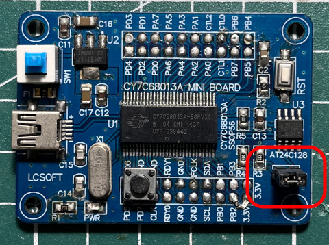

參考資訊：
https://www.triplespark.net/elec/periph/USB-FX2/eeprom/
https://www.triplespark.net/elec/periph/USB-FX2/software/
步驟如下：
1. 清除EEPROM資料
2. 插上插銷後，連接USB到PC

$ lsusb
Bus 002 Device 035: ID 04b4:8613 Cypress Semiconductor Corp. CY7C68013 EZ-USB FX2 USB 2.0 Development Kit
$ sudo fxload -D /proc/bus/usb/002/035 -I main.hex -c 0x01 -s Vend_Ax.hex -t fx2
FX2: config = 0x01, connected, I2C = 400 KHz
Writing vid=0x04b4, pid=0x6473
P.S. fxload需要指定USB BUS位置(如：Bus 002 Device 035)